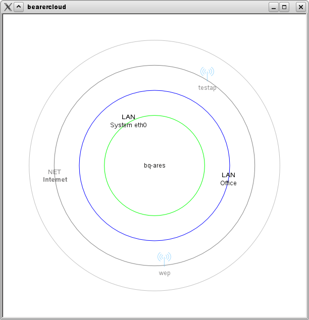

|
Home · All Classes · All Functions · | |
Files:
The Bearer Cloud example shows how to use the Bearer Management API to monitor the connectivity state of the local device.

Bearer Management provides the QNetworkConfigurationManager class which can be used to monitor changes in the available network configurations and the QNetworkSession class which is used to open and close a session bringing a network interface up or down if necessary.
This example displays all known network configurations in a cloud orbiting the local device. There are four orbits representing the four possible states that the network configuration can be in. The closer the orbit the more useful the network configuration is in its current state. The inner orbit is populated with network configurations that are in the Active state. The second orbit is populated with network configurations that are in the Discovered state. The third orbit is populated with network configurations that are in the Defined state. Finally the outer orbit is populated by configurations that are in the Undefined state.
Hovering the mouse over a network configuration will display information about the network configuration in a tool tip.
Double clicking on an Active or Discovered network configuration will close or open a network session, respectively.
Lastly you can reorganize the cloud without changing the state of the network configurations by dragging them around.
This example consists of two main classes, the BearerCloud and Cloud classes. The Cloud class represents a single network session and associated network configuration. The BearerCloud class implements a Graphics View scene and manages the life-cycle of Cloud objects in response to notification signals from QNetworkConfigurationManager.
When constructing the scene we first calculate some random offsets using the global qsand() and qrand() functions. We will use these offsets to scatter the initial position of new Cloud objects.
Next we place a text item in the center of the scene to represent the local device and surround it with four concentric circles to help visualize the orbits.
Finally we connect up the network configuration notification signals and queue the initial population of the scene during the next iteration of the event loop.
BearerCloud::BearerCloud(QObject *parent)
: QGraphicsScene(parent), timerId(0)
{
setSceneRect(-300, -300, 600, 600);
qsrand(QDateTime::currentDateTime().toTime_t());
offset[QNetworkConfiguration::Active] = 2 * M_PI * qrand() / RAND_MAX;
offset[QNetworkConfiguration::Discovered] = offset[QNetworkConfiguration::Active] + M_PI / 6;
offset[QNetworkConfiguration::Defined] = offset[QNetworkConfiguration::Discovered] - M_PI / 6;
offset[QNetworkConfiguration::Undefined] = offset[QNetworkConfiguration::Undefined] + M_PI / 6;
thisDevice = new QGraphicsTextItem(QHostInfo::localHostName());
thisDevice->setData(0, QLatin1String("This Device"));
thisDevice->setPos(thisDevice->boundingRect().width() / -2,
thisDevice->boundingRect().height() / -2);
addItem(thisDevice);
qreal radius = Cloud::getRadiusForState(QNetworkConfiguration::Active);
QGraphicsEllipseItem *orbit = new QGraphicsEllipseItem(-radius, -radius, 2*radius, 2*radius);
orbit->setPen(QColor(Qt::green));
addItem(orbit);
radius = Cloud::getRadiusForState(QNetworkConfiguration::Discovered);
orbit = new QGraphicsEllipseItem(-radius, -radius, 2*radius, 2*radius);
orbit->setPen(QColor(Qt::blue));
addItem(orbit);
radius = Cloud::getRadiusForState(QNetworkConfiguration::Defined);
orbit = new QGraphicsEllipseItem(-radius, -radius, 2*radius, 2*radius);
orbit->setPen(QColor(Qt::darkGray));
addItem(orbit);
radius = Cloud::getRadiusForState(QNetworkConfiguration::Undefined);
orbit = new QGraphicsEllipseItem(-radius, -radius, 2*radius, 2*radius);
orbit->setPen(QColor(Qt::lightGray));
addItem(orbit);
connect(&manager, SIGNAL(configurationAdded(QNetworkConfiguration)),
this, SLOT(configurationAdded(QNetworkConfiguration)));
connect(&manager, SIGNAL(configurationRemoved(QNetworkConfiguration)),
this, SLOT(configurationRemoved(QNetworkConfiguration)));
connect(&manager, SIGNAL(configurationChanged(QNetworkConfiguration)),
this, SLOT(configurationChanged(QNetworkConfiguration)));
QTimer::singleShot(0, this, SLOT(updateConfigurations()));
}
Populating the scene with the initial list of known network configuration is easy. Iterate over the list returned by QNetworkConfigurationManager::allConfigurations(), calling our configurationAdded() slot on each one.
We finishing off by calling cloudMoved() to ensure that animations are started.
void BearerCloud::updateConfigurations()
{
QList<QNetworkConfiguration> allConfigurations = manager.allConfigurations();
while (!allConfigurations.isEmpty())
configurationAdded(allConfigurations.takeFirst());
cloudMoved();
}
The configurationAdded() slot gets called when a new network configuration is added to the system.
It stores the identifier of the network configuration in the configStates map, which is used to keep a count of the number of network configurations in each state. This in turn is used to calculate the initial position of new Cloud objects.
Next we create a new Cloud object for this network configuration. Set its initial position and store it in the configurations hash.
The last step is to add it to the scene by calling QGraphicsScene::addItem().
void BearerCloud::configurationAdded(const QNetworkConfiguration &config)
{
const QNetworkConfiguration::StateFlags state = config.state();
configStates.insert(state, config.identifier());
const qreal radius = Cloud::getRadiusForState(state);
const int count = configStates.count(state);
const qreal angle = 2 * M_PI / count;
Cloud *item = new Cloud(config);
configurations.insert(config.identifier(), item);
item->setPos(radius * cos((count-1) * angle + offset[state]),
radius * sin((count-1) * angle + offset[state]));
addItem(item);
cloudMoved();
}
The configurationRemoved() slot gets called when a network configuration is removed from the system.
First we remove all references to the network configuration from the configStates and configurations member variables.
Next we initiate animation by setting a final scale value on the Cloud object associated with the removed network configuration.
Finally we flag the Cloud object to delete itself after it has finished animating.
void BearerCloud::configurationRemoved(const QNetworkConfiguration &config)
{
foreach (const QNetworkConfiguration::StateFlags &state, configStates.uniqueKeys())
configStates.remove(state, config.identifier());
Cloud *item = configurations.take(config.identifier());
item->setFinalScale(0.0);
item->setDeleteAfterAnimation(true);
cloudMoved();
}
The Cloud object will take care of most of the work required when a network configuration changes. All we do in the configurationChanged() slot is update the configStates member variable.
void BearerCloud::configurationChanged(const QNetworkConfiguration &config)
{
foreach (const QNetworkConfiguration::StateFlags &state, configStates.uniqueKeys())
configStates.remove(state, config.identifier());
configStates.insert(config.state(), config.identifier());
cloudMoved();
}
Each network session and associated network configuration known to the system is represented in the scene as a Cloud object.
In the Cloud constructor we first initialize member variables. Then we create a new QNetworkSession object bound to the network configuration. Next we connect the QNetworkSession signals which we use to monitor it for state changes.
Next we set some QGraphicsItem properties. The QGraphicsItem::ItemIsMovable flag enables mouse interaction with the Cloud object.
The Cloud object consists of an icon and a text caption, these are constructed here. We will assign values to them later, as these will change as the sessions state changes.
Next we set the initial animation state and call our newConfigurationActivated() slot to finish setting up the Cloud object based on the state of network session.
Cloud::Cloud(const QNetworkConfiguration &config, QGraphicsItem *parent)
: QGraphicsItem(parent), configuration(config), deleteAfterAnimation(false)
{
session = new QNetworkSession(configuration, this);
connect(session, SIGNAL(newConfigurationActivated()),
this, SLOT(newConfigurationActivated()));
connect(session, SIGNAL(stateChanged(QNetworkSession::State)),
this, SLOT(stateChanged(QNetworkSession::State)));
setFlag(ItemIsMovable);
#if (QT_VERSION >= QT_VERSION_CHECK(4, 6, 0))
setFlag(ItemSendsGeometryChanges);
#endif
setZValue(1);
icon = new QGraphicsSvgItem(this);
text = new QGraphicsTextItem(this);
currentScale = 0;
finalScale = 1;
setTransform(QTransform::fromScale(currentScale, currentScale), false);
setOpacity(0);
newConfigurationActivated();
}
The newConfigurationActivated() slot is called when a session has successfully roamed from one access point to another.
The first thing we do is set the icon, inserting it into a shared SVG renderer cache if it is not already available. Next we set the text caption to the name of the network configuration.
We then set the position of the icon and text caption so that they are centered horizontally.
Finally we call our stateChanged() slot.
void Cloud::newConfigurationActivated()
{
const QString bearerName = configuration.bearerName();
if (!svgCache.contains(bearerName)) {
if (bearerName == QLatin1String("WLAN"))
svgCache.insert(bearerName, new QSvgRenderer(QLatin1String(":wlan.svg")));
else if (bearerName == QLatin1String("Ethernet"))
svgCache.insert(bearerName, new QSvgRenderer(QLatin1String(":lan.svg")));
else
svgCache.insert(bearerName, new QSvgRenderer(QLatin1String(":unknown.svg")));
}
icon->setSharedRenderer(svgCache[bearerName]);
if (configuration.name().isEmpty()) {
text->setPlainText(tr("HIDDEN NETWORK"));
} else {
if (configuration.type() == QNetworkConfiguration::ServiceNetwork)
text->setHtml("<b>" + configuration.name() + "</b>");
else
text->setPlainText(configuration.name());
}
const qreal height = icon->boundingRect().height() + text->boundingRect().height();
icon->setPos(icon->boundingRect().width() / -2, height / -2);
text->setPos(text->boundingRect().width() / -2,
height / 2 - text->boundingRect().height());
stateChanged(session->state());
}
The stateChanged() slot is called when the session state changes.
In this slot we set lower the opacity of Cloud objects with network sessions that cannot be opened, and set a detailed tool tip describing the sessions state.
void Cloud::stateChanged(QNetworkSession::State state)
{
if (configuration.name().isEmpty())
finalOpacity = qreal(0.1);
else if (session->state() == QNetworkSession::NotAvailable)
finalOpacity = 0.5;
else
finalOpacity = 1.0;
QString tooltip;
if (configuration.name().isEmpty())
tooltip += tr("<b>HIDDEN NETWORK</b><br>");
else
tooltip += tr("<b>%1</b><br>").arg(configuration.name());
const QNetworkInterface interface = session->interface();
if (interface.isValid())
tooltip += tr("<br>Interface: %1").arg(interface.humanReadableName());
tooltip += tr("<br>Id: %1").arg(configuration.identifier());
const QString bearerName = configuration.bearerName();
if (!bearerName.isEmpty())
tooltip += tr("<br>Bearer: %1").arg(bearerName);
QString s = tr("<br>State: %1 (%2)");
switch (state) {
case QNetworkSession::Invalid:
s = s.arg(tr("Invalid"));
break;
case QNetworkSession::NotAvailable:
s = s.arg(tr("Not Available"));
break;
case QNetworkSession::Connecting:
s = s.arg(tr("Connecting"));
break;
case QNetworkSession::Connected:
s = s.arg(tr("Connected"));
break;
case QNetworkSession::Closing:
s = s.arg(tr("Closing"));
break;
case QNetworkSession::Disconnected:
s = s.arg(tr("Disconnected"));
break;
case QNetworkSession::Roaming:
s = s.arg(tr("Roaming"));
break;
default:
s = s.arg(tr("Unknown"));
}
if (session->isOpen())
s = s.arg(tr("Open"));
else
s = s.arg(tr("Closed"));
tooltip += s;
tooltip += tr("<br><br>Active time: %1 seconds").arg(session->activeTime());
tooltip += tr("<br>Received data: %1 bytes").arg(session->bytesReceived());
tooltip += tr("<br>Sent data: %1 bytes").arg(session->bytesWritten());
setToolTip(tooltip);
}
In our reimplementation of the QGraphicsItem::mouseDoubleClickEvent() function we call QNetworkSession::open() or QNetworkSession::close() to open or close the session in response to a double left click.
void Cloud::mouseDoubleClickEvent(QGraphicsSceneMouseEvent *event)
{
if (event->button() == Qt::LeftButton) {
if (session->isOpen())
session->close();
else
session->open();
event->accept();
}
}
As we support the user dragging Cloud objects around we need to restart animations when the position of the Cloud object changes. This is accomplished by reimplementing the QGraphicsItem::itemChanged() function and calling the cloudMoved() function of the BearerCloud object.
QVariant Cloud::itemChange(GraphicsItemChange change, const QVariant &value)
{
switch (change) {
case ItemPositionHasChanged:
if (BearerCloud *bearercloud = qobject_cast<BearerCloud *>(scene()))
bearercloud->cloudMoved();
default:
;
};
return QGraphicsItem::itemChange(change, value);
}
The remainder of the code for the Cloud object implements the animations. The calculateForces() function calculates the new position of the Cloud object based on the position of all the other Cloud objects in the scene. The new position is set when the advance() function is called to update the Cloud object for the current animation frame.
| Copyright © 2009 Nokia Corporation and/or its subsidiary(-ies) | Trademarks | Qt Mobility Project 1.0.0 |